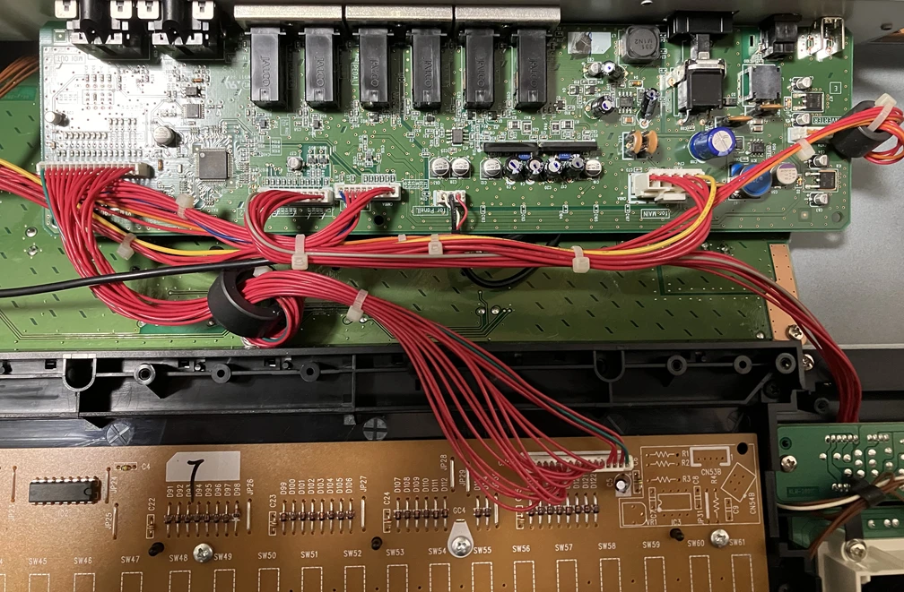
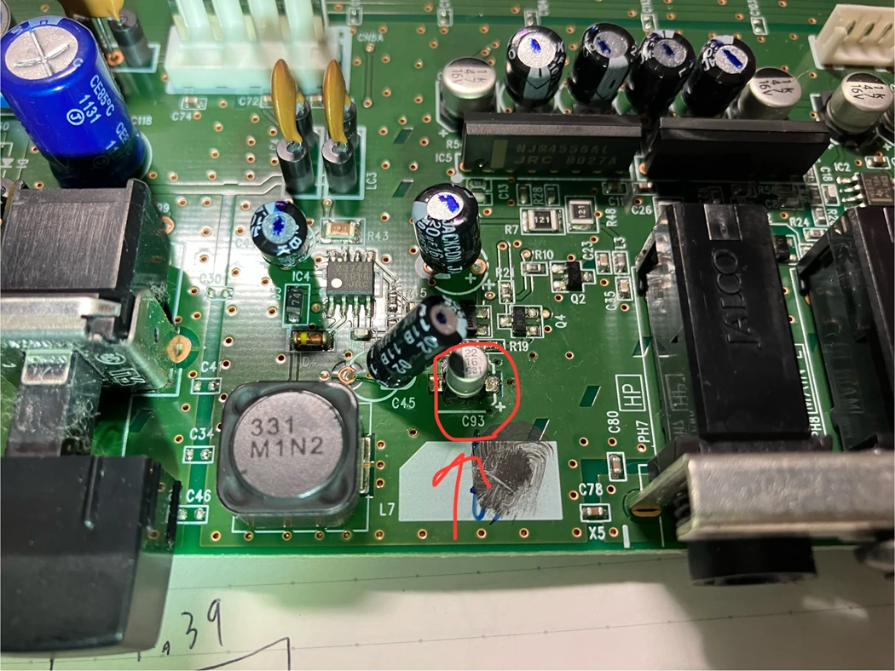
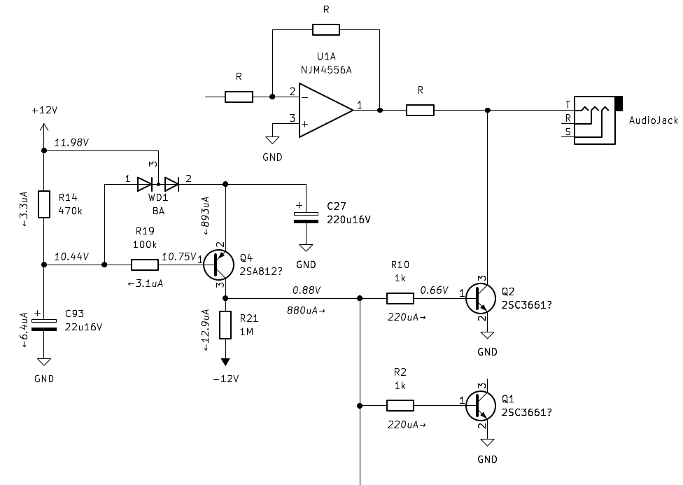

友人から修理依頼を受けて直したKORGのシンセサイザーについての記録を残します。
出力についているミューティングトランジスタ(Q1、Q2、Q5、Q7)のVbeを測ったところすべて0.66Vあり、常に導通していた。このためミュート制御の回路の故障と判断した。
下に故障箇所周辺の写真と、基板から推測した回路図を示す。各ノードの電圧/電流は修理前に測定したものである。

電源&アナログ回路基板

劣化したコンデンサ

アンプ周辺は概略。部品の同定は間違っているかもしれない。
ミュート制御の回路のうち、時定数を作る電解コンデンサ(C93)の漏れ電流が大きく(6.4uA)なっていた。取り外して容量を測ったところ、5uFしかない状態だった。これによりQ4のPNPトランジスタがOFFにならず、常に中途半端なミュート状態になっていた。このためほとんど音量が出ず、非常に歪みの多い出力になってしまっていた。
C93を長寿命タイプの電解コンデンサに交換した。電解コンデンサではいつかは今回の故障モードで再び壊れると思われる。フィルムコンデンサや、直流バイアス特性に気を付ければ、積層セラミックコンデンサ等に交換しても良いかもしれない。
すべての出力でカタログスペックを満たすようになった。歪みもなくきれいな音を鳴らせるようになった。
電源&アナログ回路の基板は単体で電源を入れても問題ない模様。故障箇所の特定時には基板単体にACアダプタを接続して動作させた。この方が作業性が良い。